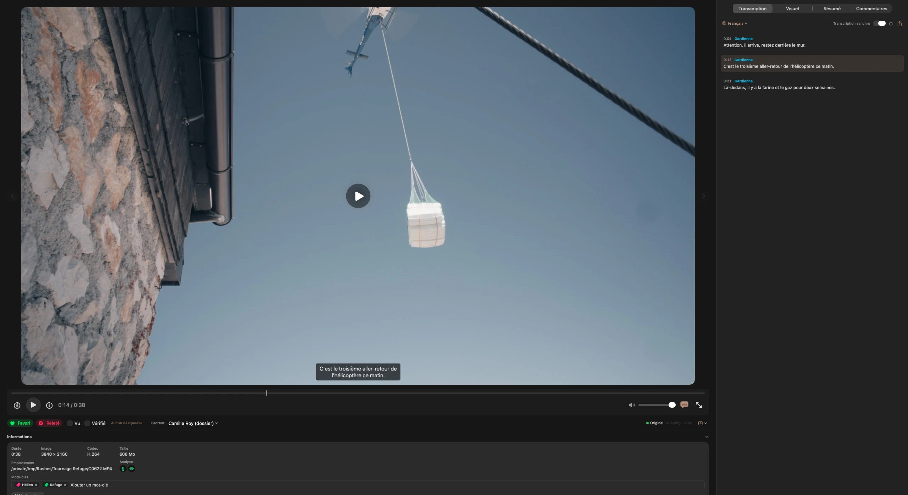
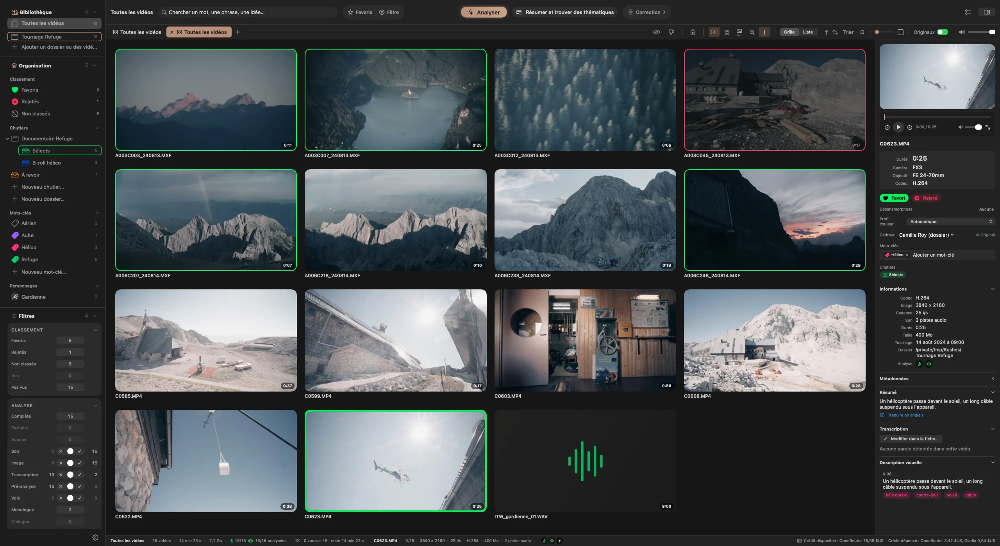
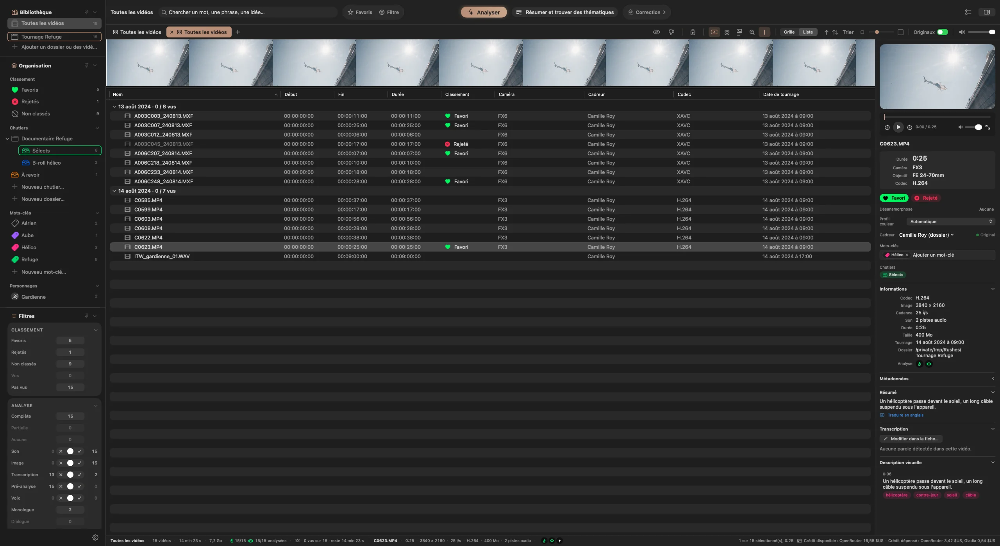
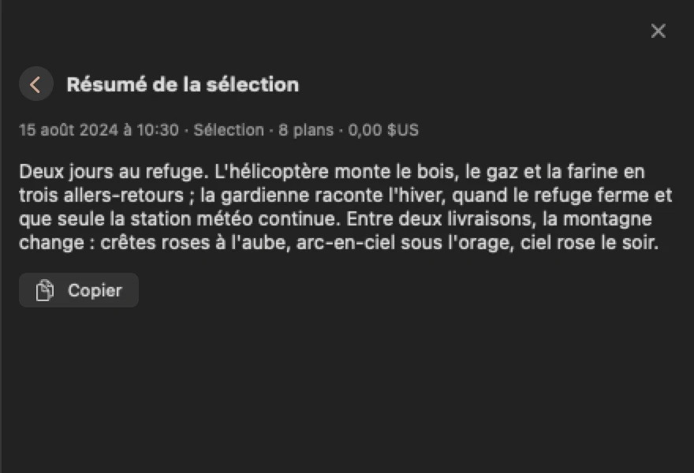
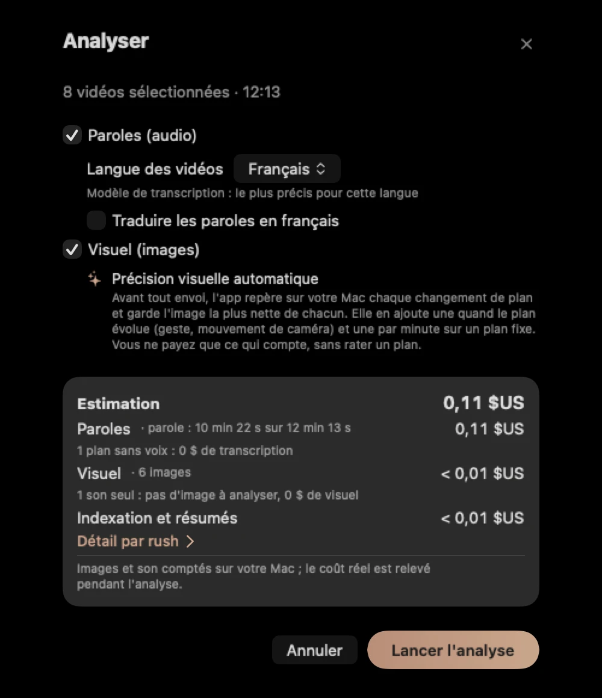
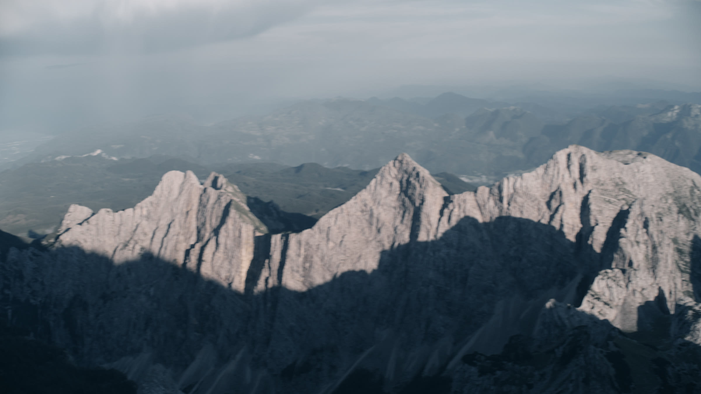

L’arc-en-ciel sur les crêtes ?
Trouvé à 0:03.
Eye Derush écoute et regarde vos rushs, puis retrouve chaque moment.
Paroles et images, dans les mêmes résultats
Chaque résultat dit pourquoi il est là, et s’ouvre à la seconde près.

- Par les mots
- Dans la transcription et ses traductions, sans souci d’accents ni de majuscules.
- Par le sens
- Un passage qui dit la même chose avec d’autres mots.
- Plus comme ça
- Un clic droit sur un résultat ramène les passages les plus proches.
Cliquez une phrase, le plan s’ouvre là
La transcription suit la lecture, nomme qui parle, et se corrige ou se découpe en sections.

Un coup d’œil avec la barre d’espace
Depuis une vignette ou un résultat, le plan se lit dans un panneau, sous-titres compris. La fiche reste à un clic.

Vos fichiers ne sont jamais modifiés, déplacés ni copiés.

- Favoris et rejetés
- Une touche classe un plan, ou seulement un passage.
- Sections
- Un passage gardé part au montage, pas le plan entier.
- Chutiers et mots-clés
- Un plan peut se ranger dans plusieurs à la fois.
- Personnages
- Les visages sont reconnus sur votre Mac, jamais envoyés.
Gardez un passage, pas tout le plan
Glissez sur une vignette pour tracer une section, puis classez-la d’une touche : vert pour garder, rouge pour écarter.


Un résumé, puis les sujets qui reviennent
Sur une sélection de plans, l’app écrit ce qu’ils montrent et disent, puis repère les thématiques. Chacune devient un chutier d’un clic.


Puis tout part au montage
Un moment, une section ou un chutier entier : le logiciel lit vos rushs là où ils sont.
- Final Cut Pro Import direct dans la bibliothèque ouverte, ou fichier .fcpxml.
- DaVinci Resolve Un chutier dans le Media Pool du projet ouvert.
- Premiere Pro Un fichier .xml : chutiers, plans, et sections en sous-plans.

Un devis avant chaque envoi
0,50 $
environ, par heure de rushs analysée
Gratuit, sur votre Mac
- Importer et pré-analyser
- Reconnaître les visages
- Classer et ranger
- Exporter vers le montage
Payant, après devis
- Transcription (Gladia)
- Description des images (OpenRouter)
- Recherche par le sens
- Thématiques de vos rushs
L’analyse passe par vos propres clés, gardées dans le Trousseau du Mac. Deux budgets fixent vos limites.

Vos formats, vos profils log
- Vidéo
- MOV, MP4, M4V, MXF, MKV, AVI, MTS, M2TS
- Son seul
- WAV, MP3, M4A, AIFF, FLAC, CAF
- Profils log, affichés en Rec. 709
- Sony S-Log2, S-Log3. Canon C-Log, C-Log2, C-Log3. Panasonic V-Log. Fujifilm F-Log, F-Log2. DJI D-Log. ARRI LogC3, LogC4. RED Log3G10. Apple Log. HLG.
- Mac
- macOS 26 ou plus récent
- Langues
- Interface en français et en anglais
